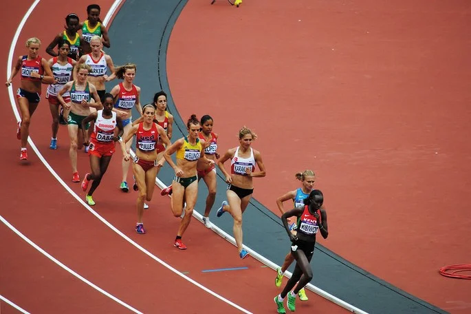
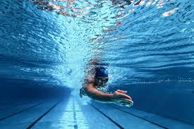
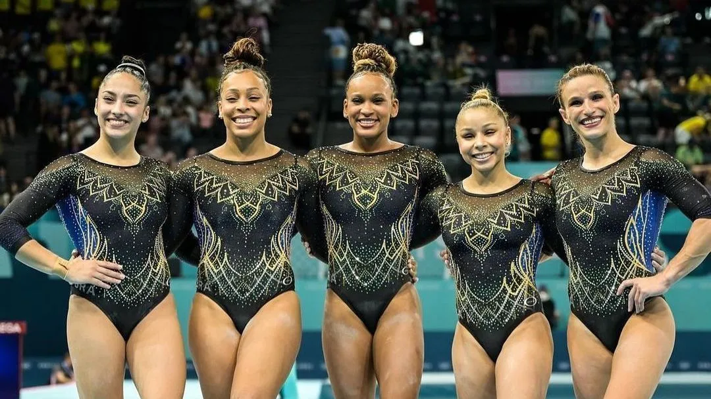
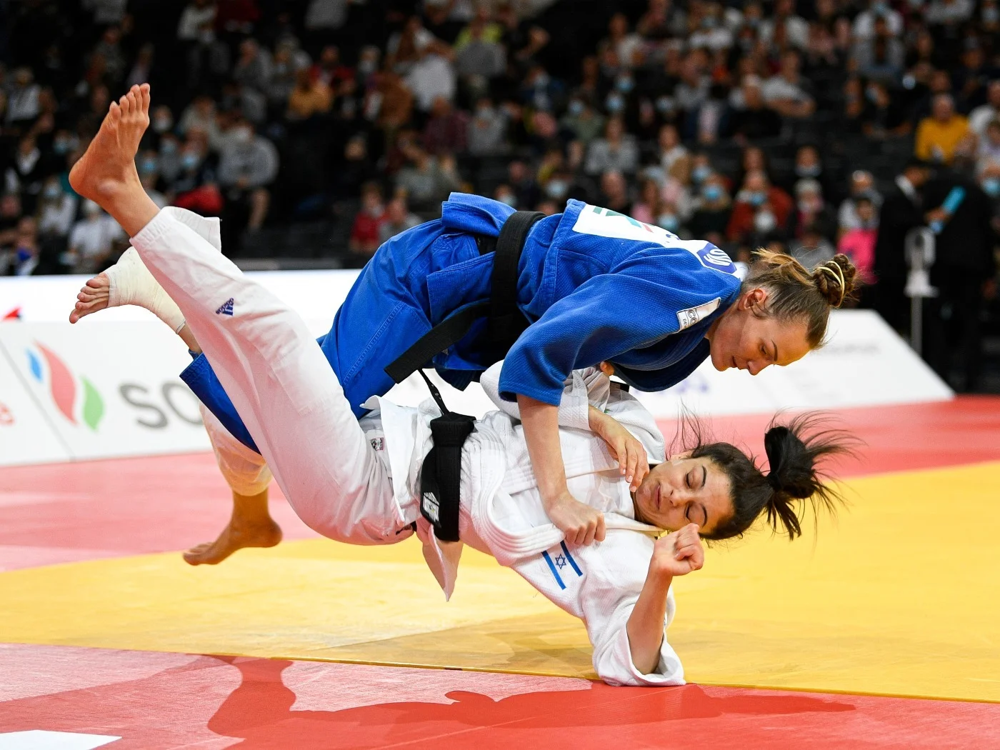

Engloba uma variedade de eventos de corrida, salto e arremesso. As provas incluem corrida de curta e longa distância, saltos em altura e distância, e lançamentos como o de dardo e disco.
Competição em piscina em várias distâncias e estilos, como livre, peito, costas e borboleta. Inclui também provas de revezamento e modalidades em águas abertas.
Envolve exercícios de solo, barras assimétricas, trave de equilíbrio e cavalo com alças. Destaca-se pela combinação de força, flexibilidade e controle corporal.
Arte marcial e esporte de combate japonês onde os atletas tentam derrubar e imobilizar o adversário usando técnicas de agarramento e projeção. As vitórias podem ser obtidas por imobilização, projeção ou técnica.
Esporte coletivo onde duas equipes de cinco jogadores cada tentam marcar pontos lançando uma bola através de uma cesta elevada. É conhecido por sua velocidade, estratégia e habilidades técnicas.